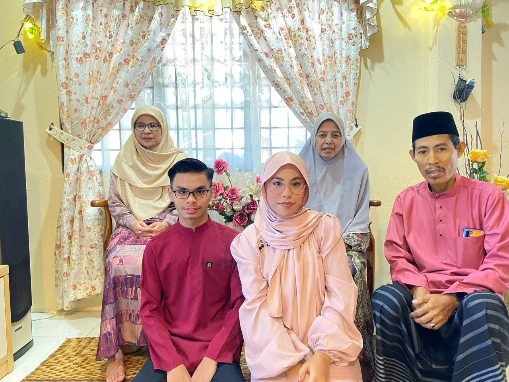

Family
Click here to listen to one of my favourite song:
Side note: This song was chosen as it lyrics of storyline are talking about family.
I am dedicating this song to my parents and also to my grandmother.
Therefore, I hope you will able to understand the meaning of every words in this song.

This picture was taken during Eid AidilFitri this year on 13th May 2021.
From back left, that is my beautiful mother, as she has been the most wonderful
and greatest mother in the world. I am forever indept with her to have been by my
side since I was born until now. On the right back is my lovely grandmother whom I
love and the missed the most because she is no longer in this world with us. Every single
day, the thought of her would always occur in my mind. There are thousand of unsaid words
that I can't no longer say to her. However, I pray everyday that Allah would grant her
to be place in the most beautiful Jannah. Next, we have my brother, that is only one year
younger than me. He is currently studying at Politeknik Perlis. And the last one we have
the most amazing father in this world. Honestly, people always said that I resembled my
father a lot. Maybe I should take as a compliment. That is all about my family.